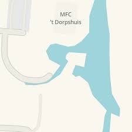
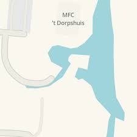

Het dorpshuis Julianadorp
Het nieuwe complex MFC Dorpshuis Julianadorp biedt ontspanning,
sport, spel en educatie voor àlle Julianadorpers.
Het bestuur van Dorpshuis Julianadorp had op zaterdag 26 september, in het kader van
de landelijke Burendag, de buren van het dorpshuis uitgenodigd voor de koffie en om tegelijkertijd
hernieuwd kennis te maken met het prachtige Dorphuis van Julianadorp.
September is ook destartmaand van het nieuwe winterseizoen voor de activiteiten binnen het dorphuis en ook
voor meerdere verenigingen is het een nieuwe start na de zomervakantie.
INFORMATIE
Activiteit Biljarten.
Beste biljarters,
Wij zijn blij om u weer te faciliteren, voorlopig op de
maandag en dinsdagmiddag bij onze vaste biljartgroep.
U kunt ook op de maandag, dinsdag, woensdag en vrijdag komen
biljarten van 10.00 tot 12.00 uur.
Helaas alleen op afspraak.
Zodat wij ons allen aan het Coronaprotocol kunnen houden.
Dank voor uw medewerking
INFORMATIE
Activiteit Breien.
Damens die gezellig willen breien kunnen op elke maandagmorgen van 9.00 tot 11.00 uur
terecht in het dorpshuis. De zaal is open om 8.45 uur en de koffie staat klaar.
De kosten hiervoor is € 5,00 per maand.
INFORMATIE
Activiteit Klaverjassen.
Wilt u een avondje uit, dan kunt u op iedere dinsdag van 20.00 tot 23.30 uur terecht in
het dorpshuis voor een gezellig spelletje klaverjassen.
De zaal is open om 19.30 uur.
De kosten zijn € 2,50 p/p. De koffie staat klaar.
(drankjes zijn hier niet bij inbegrepen)


 
